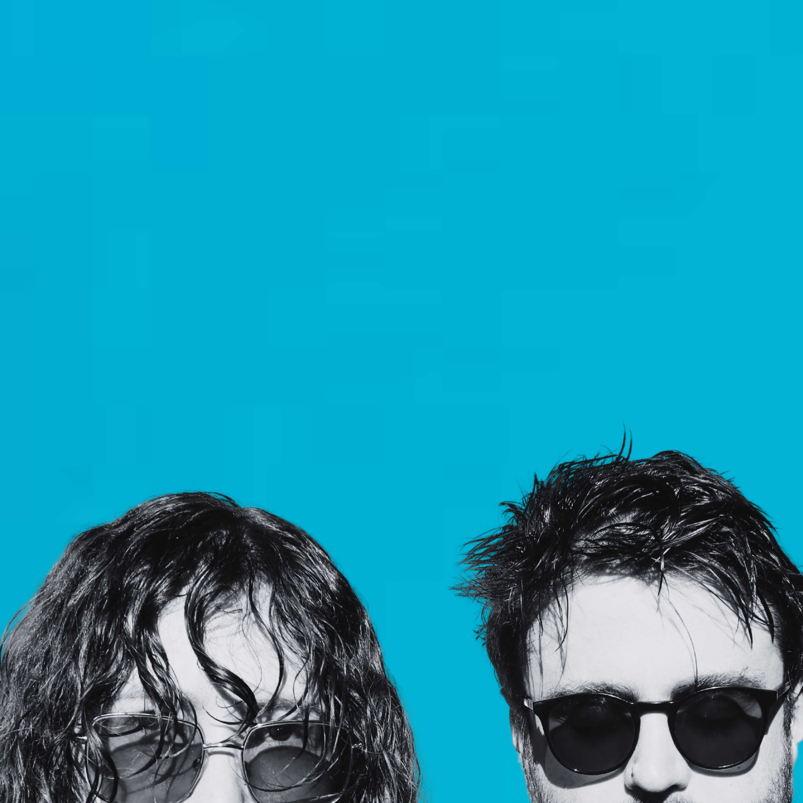
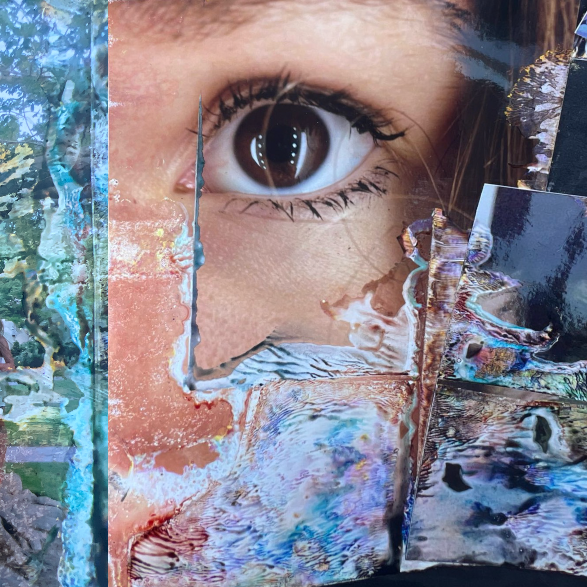

wibes

Bio...
Wibes is an Oslo-based Norwegian-American duo made up of Hansine and Avery. They met by chance on a bus heading to a rave in Oslo in 2022. They clicked instantly and started sending each other demos.
Wibes doesn’t seek to make any particular type of music. Each song springs from the ether and is followed to its logical conclusion. As a result, the outputs span indie, dream pop, IDM, and experimental dance music. It is dreamy without being sleepy and playful without being shallow.
Wibes are drawn to unusual sounds and unexpected combinations. Nature field recordings, modular synthesizers, layered bass guitar, serendipitous samples and dreamy vocals become part of their palette. Avery’s background as a bioacoustics PhD supports an organic & experimental angle, while Hansine’s songwriting brings a signature vocal aesthetic.
Wibes has been releasing singles and running promo DIY, and has tens of thousands of streams. They’re looking to ride their new EP release to join a community of artists and move on up to the next level.
New EP...

Our new self-titled EP.
Recorded in the Santa Cruz Mountains.
Planned release in September 2026.
Mastered by Josh Jacobs at Sonic Zen Studios in Oakland, CA.
-
I am not the least afraid to die0:00 / 0:00
-
Wanna (be)0:00 / 0:00
-
Love Comes Again0:00 / 0:00
Links...
Released Music...
Press...
for "uendelig flow":
Da Da Da MusicIGGY Magazine
York Calling
for "øyestikker":
Zone NightsWe All Want Someone to Shout For
for "Mystic Whale Love":
Cities and MemoriesWe All Want Someone to Shout For
Podcart
Zone Nights